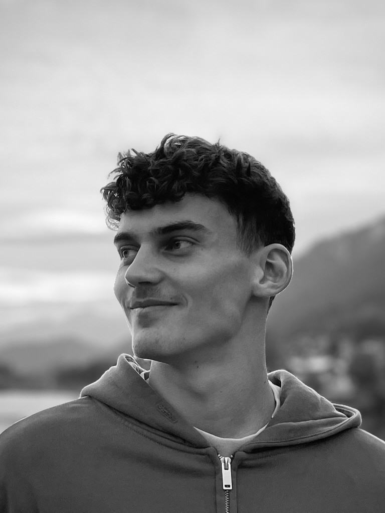

01
Genaues Hinsehen
Vor dem Entwerfen ist es essenziell, den Ort mit seinen individuellen Potenzialen und Herausforderungen genau zu erfassen.
Mich interessiert, was ein Ort schon kann. Und was er noch werden könnte.

Mich interessiert, wie Architektur Atmosphäre erzeugt, Begegnung ermöglicht und im Bestand ungenutzte Potenziale neu aktiviert.
Arbeiten im Bestand heißt für mich: vorhandene Strukturen sensibel weiterentwickeln und ihre räumliche Qualität durch gezielte Eingriffe stärken.
Entscheidend ist, wie sich räumliche Konstellationen in konkrete Atmosphären übersetzen. Räume werden dann besonders, wenn sie Offenheit, Ruhe, Geborgenheit und Identität verbinden und soziale Interaktion auf natürliche Weise tragen.
Diese Qualitäten arbeite ich heraus, indem ich den Blick für das Gesamtkonzept mit einer präzisen Wahrnehmung für Details verbinde. Dazu kommt ein ausgeprägtes Gespür für interdisziplinäres Arbeiten und eine offene, ausgewogene Zusammenarbeit im Team.
Drei Grundsätze, die meine Entwurfsarbeit und die Zusammenarbeit im Team prägen.
Vor dem Entwerfen ist es essenziell, den Ort mit seinen individuellen Potenzialen und Herausforderungen genau zu erfassen.
Ein Entwurf endet nicht am Grundstück. Umgebung, Umstände, Lebensdauer und Bedürfnisse sind fester Bestandteil.
Gute Entwürfe leben von gemeinsamem Austausch, ehrlicher Kommunikation und guter Moderation.
Landschaft, Wasser, Bauwerk. Die Motive sind andere als im Studium, die Fragen dieselben: Wie wirkt ein Ort, und woran liegt das?


Zeichnen ist die langsamste Art zu sehen. Deshalb die genaueste.
Architektur, Handwerk, Technik: Für mich ist es interessant, das Entwerfen und Planen aus verschiedenen Perspektiven kennenzulernen.

Entwicklung eines gemeinwohlorientierten Zentrums im Bonner Melbtal.

Sanierung und Erweiterung des Kunstpavillons der Rudolf-Steiner-Schule Dortmund. 1. Platz im studentischen Wettbewerb.

Umnutzung der denkmalgeschützten Bergischen Kaserne in Düsseldorf zum Hotel — bis zur Wirtschaftlichkeitsrechnung durchgearbeitet.

Inhalte folgen.

Inhalte folgen.
Weitere künstlerische Arbeiten und Werke auf Anfrage gerne melden.
Für Praktika, Projekte, Mitarbeit oder einfach ein Gespräch über Architektur.